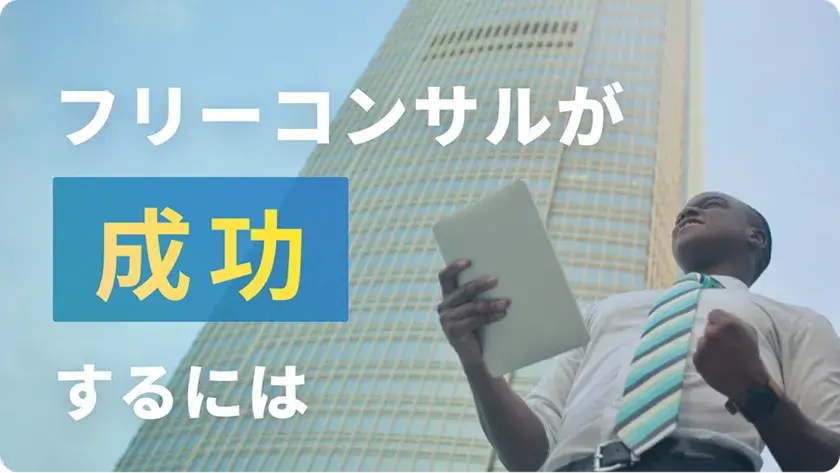

フリーコンサルの現場から〜活動の実態と成功のポイント

フリーコンサルとしての活動は多岐にわたりますが、成功の鍵はどこにあるのでしょうか。この記事では、フリーコンサルの基本から最新の動向、成功への具体的なステップまでをプロの視点で詳しく紹介します。あなたの活動を次のレベルへと導く情報が満載です。
1.フリーコンサル（フリーコンサルタント）とは
フリーコンサル、またはフリーコンサルタントとは、独立して業務を行うコンサルタントのことを指します。企業や個人が抱える課題や問題を解決するためのアドバイスやサポートを提供する専門家であり、特定の会社に所属せず、自らのスキルや経験を活かして多様なクライアントと契約を結ぶことが特徴です。
1-1. フリーコンサルの定義と特徴
フリーコンサルは、一般的なコンサルタントと同じく、クライアントのビジネスやプロジェクトに関する課題を解決するための専門的な知識やスキルを持っています。しかし、フリーコンサルの最大の特徴は、独立して活動することです。これにより、多様な業界や分野のクライアントとの関わりを持つことができ、幅広い経験や知識を蓄積することが可能となります。また、自らのビジネスモデルや価格設定を自由に決めることができるため、柔軟な働き方を選択することができます。
1-2. フリーコンサルと従来のコンサルタントの違い
フリーコンサルと従来のコンサルタント、これら二つの職種は似ているようでいて、実は多くの違いがあります。まず、フリーコンサルは独立して活動するプロフェッショナルであり、自らのスキルや経験を活かして、多様なクライアントと直接契約を結びます。これに対して、従来のコンサルタントは大手コンサルティングファームや企業に所属し、その組織の方針やルールに従って業務を行います。
また、フリーコンサルは自らのビジネスモデルや価格設定を自由に決めることができるため、柔軟に対応することが可能です。一方、従来のコンサルタントは組織の方針に従った価格設定や業務範囲が定められていることが多いです。
フリーコンサルの大きな魅力は、その自由度の高さにあります。自分の得意分野や興味を追求し、直接クライアントとの関係を築くことができるのです。しかし、その分リスクも高く、安定した収入を得るための戦略やネットワーク構築が求められます。従来のコンサルタントは組織のバックアップを受けられる反面、自由度に制約があるとも言えます。
どちらの職種にも一長一短がありますが、自分のキャリアやライフスタイルに合わせて選択することが大切です。
| 項目 | フリーコンサル | 従来の コンサルタント |
|---|---|---|
| 雇用形態 | 独立・自営業 | 企業に所属 |
| 収入の安定性 | 不安定 | 比較的安定 |
| 案件獲得 | 個人のネットワークや マッチングサービス |
企業が提供 |
| スキルアップ | 個人の責任で | 企業の研修などで |
| 働き方 | 柔軟 | 企業のブランド を代表する |
| ブランディング | 個人のブランド築く | 企業の方針に従う |
| リスク | 個人が全て責任 | 企業が一部を負担 |
2.フリーコンサルの活動方法と戦略
フリーコンサルとしての成功は、適切な活動方法と戦略の選択にかかっています。独立したプロフェッショナルとしての立場を保ちつつ、クライアントとの信頼関係を築くためのステップや、競合他者との差別化を図る戦略が求められます。
2-1. フリーコンサルとしての活動のステップ
まず、自身の専門分野や得意とする領域を明確に定義します。次に、そのスキルや知識を活かせるクライアントをターゲットとして絞り込み、マーケティング活動やネットワーキングを通じてアプローチを行います。案件獲得後は、クライアントの課題解決を目指してコンサルティングを提供。プロジェクト終了後も、アフターフォローや定期的なフィードバックを通じて、長期的な関係性を築くことが大切です。
2-2. 成功するための戦略
成功の鍵は、自身の強みや特色を明確にアピールすること。競合他者との差別化を図るために、独自の価値提案やサービス内容を工夫することが必要です。また、定期的なスキルアップや市場の動向に敏感になることで、変化するクライアントのニーズに迅速に対応することができます。さらに、信頼関係を築くためのコミュニケーション能力や、結果を出すための実行力も欠かせません。
3.フリーコンサルの案件とマッチング
フリーコンサルとしての活動を始める際、最も重要なのは適切な案件を見つけることです。案件の探し方や、マッチングサービスの利用方法について、ここでは詳しく解説します。
3-1. 案件の探し方
案件を探す際の基本は、自身の専門分野や得意とする領域に合わせた案件を選ぶこと。初めは、知人や既存のネットワークを活用して案件を探すのが効果的です。また、SNSやブログを活用して自身のスキルや経験をアピールすることで、新しいクライアントからのオファーを受けることも可能です。さらに、専門のセミナーや勉強会に参加することで、同業者や潜在的なクライアントとのネットワークを広げることができます。
3-2. マッチングサービスの利用方法と紹介
近年、フリーコンサルとクライアントを繋ぐマッチングサービスが増えてきました。これらのサービスを利用することで、自身のスキルや経験に合った案件を効率的に探すことができます。利用方法は、サービスに登録し、プロフィールや実績を充実させること。これにより、クライアントからのオファーが増える可能性が高まります。また、自らもアクティブに案件を検索し、応募することで、より多くのチャンスを掴むことができます。
4.フリーコンサル関連の企業とサービス
フリーコンサルの活動をサポートする企業やサービスは、近年増加の一途をたどっています。これらの企業やサービスを利用することで、フリーコンサルとしての活動をより効果的に、そして効率的に進めることができます。
4-1. 代表的なフリーコンサル関連企業の紹介
フリーコンサルをサポートする企業は多数存在しますが、その中でも特に注目されるのは、マッチングサービスを提供する企業や、コンサルタントのスキルアップをサポートする研修・セミナーを提供する企業です。これらの企業は、フリーコンサルのニーズに応じて、様々なサービスを展開しており、活動の幅を広げるための強力なパートナーとなるでしょう。
4-2. 人気のフリーコンサルサービスの紹介
当サイト「プロコン（仮）」はコンサルタントのマッチングプラットフォームです。企業の課題に応じたプロジェクトのご提案からコンサルタントのアサイン、プロジェクト推進フォローまで幅広く支援しています。
当サイトに限らず、近年、多くのフリーコンサルマッチングサービスが登場しています。これらのサービスは、フリーコンサルとクライアントを効率的に繋ぐプラットフォームとして、非常に高い評価を受けています。登録から案件の検索、契約までの一連の流れをサポートしてくれるため、フリーコンサルとしての活動がスムーズに進められます。また、レビューや評価機能が充実しているサービスも多く、信頼性の確認や自身のブランディングにも役立ちます。
5.フリーコンサルの活用事例と動向
フリーコンサルとしての活動は、多くの成功事例を生み出しています。また、日本におけるフリーコンサルの動向も日々変化しており、その最新の情報を把握することは、フリーコンサルとしての活動をより効果的に進めるために重要です。
5-1. 成功事例の紹介
フリーコンサルとしての成功事例は多岐にわたります。例えば、特定の業界における専門知識を活かして、新規事業の立ち上げや既存事業の改善をサポートしたケース、また、マッチングサービスを活用して短期間で多数の案件を獲得し、高い評価を受けたケースなどがあります。これらの事例は、フリーコンサルとしての活動の幅や可能性を示しており、多くのコンサルタントにとって参考となるでしょう。
5-2. 日本におけるフリーコンサルの最新動向
日本におけるフリーコンサルの動向として、近年、特定の業界や分野に特化したフリーコンサルが増加しています。また、オンラインを活用したコンサルティングサービスの需要も高まっており、リモートワークの普及に伴い、地域にとらわれずに活動するフリーコンサルも増えてきました。さらに、フリーコンサルをサポートするための研修やセミナー、ツールの提供も充実してきており、フリーコンサルとしての活動環境が整備されつつあることが伺えます。
6.フリーコンサルの相場・単価は？
フリーコンサルタントとしての活動を始める際、多くの方が気になるのが「相場」です。
フリーコンサルの報酬は、専門性や経験、提供するサービスの内容などによって大きく変動します。一般的に、ビジネス戦略や経営コンサルティングのような高度な専門性を要する分野では、高い報酬が設定されることが多いです。
一方、初心者や一般的な業務をサポートするタイプのコンサルタントは、相場がやや低めになることが考えられます。
また、フリーコンサルの報酬形態も様々です。固定報酬型、時間単位の報酬型、成果報酬型など、クライアントや案件に応じて選択することができます。特に、成果報酬型は成果を上げることができれば高い報酬を得ることができる一方、リスクも伴います。
フリーコンサルとしてのキャリアを積む中で、自身の価値を正しく理解し、適切な報酬を設定することが大切です。市場の動向を常にチェックし、自身のスキルや経験をアップデートすることで、より良い条件での仕事を獲得することが可能となります。
という前提を踏まえたうえでおおよその目安としては、独立してフリーコンサルタントとして活動する際、月収の一般的な相場は少し幅がありますが、80～250万円とされています。特に、多くの方が80～160万円の月収を実現しており、これを年収に換算すると約960～1,920万円となります。ただし、これは年間を通してフル稼働した場合の数字です。
実際には、家族や趣味の時間を大切にしたり、家庭の状況を優先するために稼働時間を調整している方も少なくありません。その結果、平均的な年収はおおよそ1,200〜1,500万円程度となることが多いです。しかし、仕事内容や稼働時間を調整（増やす）したりすることで、1,500万円を超える年収を目指すことも十分可能です。
このように、もちろん無条件に、とはいきませんが、仕事・家庭・趣味などのバランスを自分で調整することが可能であり、なおかつ高収入を狙える点はフリーコンサルの大きな魅力です。
7.よくある質問
この「よくある質問」セクションは、フリーコンサルやフリーコンサルタントとして活動を考えている方や、その活動を始めたばかりの方にとって役立つ情報を提供します。
- 質問1 フリーコンサルとしてのスキルアップはどのように行えばいいですか？
-
回答1
定期的な研修やセミナーへの参加、専門書の読書、オンラインコースの受講などを通じて、専門知識やスキルを継続的に向上させることが推奨されます。もちろん、当サイトをご活用いただくなども大変おすすめです。
- 質問2 フリーコンサルの案件獲得のコツはありますか？
- 回答2 案件獲得のコツとして、以下の点が挙げられます。まず、マッチングサービスを利用して、自身のスキルや経験に合った案件を見つけることが基本です。次に、自身の専門分野や得意な領域を明確にし、それを強みとしてアピールすることが大切です。例えば、特定の業界での経験や、ある課題解決の成功事例などを具体的に伝えることで、クライアントからの信頼を得やすくなります。また、定期的にスキルアップを図り、最新の情報やトレンドをキャッチアップすることも、案件獲得に役立ちます。
- 質問3 リモートワークでのコンサルティングは可能ですか？
- 回答3 はい、最近ではオンラインツールを活用してのリモートコンサルティングの需要が増えており、地域にとらわれずに活動することが可能です。
- 質問4 フリーコンサルとしてのリスクはありますか？
- 回答4 コンサルに限らず「フリー」である以上、一定のリスクはあります。独立して活動するため、流れに乗るまで収入の不安定さや案件獲得の難しさなどのリスクが考えられます。しかし、適切な戦略(*1)やネットワークの構築(*2)により、これらのリスクを軽減することができます。
- 質問5 フリーコンサルと従来のコンサルタントとの主な違いは何ですか？
- 回答5 フリーコンサルは独立して活動する点が大きな特徴で、従来のコンサルタントは特定の企業や組織に所属して活動することが一般的です。
- 質問6 フリーコンサルとしてのブランディングの方法は？
- 回答6 自身の専門分野や強みを明確にし、それを基にウェブサイトやSNSでの情報発信を行うことで、ブランディングを強化することができます。
(*1)適切な戦略とは？
「適切な戦略」とは、自身の専門分野を明確に定義し、その分野に特化したサービスを提供することや、定期的なスキルアップを図ることを指します。また、マーケティング活動を行い、自身のブランドを築くことも重要です。
(*2)ネットワークの構築とは？
業界のセミナーやイベントに参加して同業者やクライアントとの関係を深めること、また、SNSやブログを活用して情報発信を行い、信頼関係を築くことを意味します。これらの取り組みにより、リスクを軽減し、安定した活動を続けることができます。
フリーコンサルとしての成功は、正しい情報と実践的なアドバイスによって手の届くものとなります。この記事を通じて、あなたの活動がさらに充実し、多くのクライアントとの良好な関係を築く手助けとなれば幸いです。